Et af de … temaer i NewDeal Invest
Energi og elnet
AI-datacentre har brug for både strøm og et elnet, der kan levere den. Temaets selskaber producerer strøm, transporterer den og lagrer den.
Det handler om gas og uran, kraftværker, solceller, batterier, elnettet og elselskaberne, der sælger strømmen. I fonden består temaet af … selskaber.
Her udforsker du fondens selskaber i temaet. Udvalget dækker ikke hele teknologiområdet.
AI-genererede forklaringer og forenklede illustrationer · Om indhold og kilder
Her udforsker du fondens investeringer, ikke en fuldstændig gennemgang af teknologiområder eller selskaber. Selskabsbeskrivelserne bygger på selskabernes egne oplysninger og øvrige angivne kilder. De er ikke manuelt faktatjekket af NewDeal Invest og kan indeholde fejl eller være forældede.
Illustrationerne forenkler sammenhængene. En forbindelse viser ikke i sig selv et dokumenteret kunde- eller leverandørforhold. Fondstal vises særskilt med kilde og dato. NewDeal Invests egne kommentarer og citater er angivet med afsender og kilde.
Forandringen
AI har gjort strøm til en mangelvare
Et datacenter fyldt med nye AI-chips kan ingenting uden strøm. Verdens datacentre bruger mere og mere, og dem, der er bygget til AI, bruger mest.
Strømmen skal ikke bare laves. Den skal også flyttes frem til datacentret gennem elnettet, og den skal kunne gemmes, så serverne ikke går ned, hvis nettet svigter.
Derfor er der brug for brændsel, kraftværker, solceller, batterier og elnet på én gang. Det er her, temaets selskaber kommer ind.
- Bygge et datacenter2 til 3 år
- Få leveret kabler2 til 3 år
- Få leveret en stor transformerop til 4 år
- Bygge en ny højspændingsledning4 til 8 år
Chips og servere kan ikke bruges, før de har fået strøm. Tiderne gælder store projekter i lande som USA og Europa. Den lyse del af bjælken viser spændet.
Før og efter
Den dag strømmen gik
Den 28. april 2025 kl. 12.33 gik strømmen på hele det spanske og portugisiske fastland. Det skete midt på dagen, i solskin, og ifølge de europæiske netselskabers ekspertpanel begyndte det med for høj spænding i nettet. Det skyldtes ikke datacentre eller AI, men dagen viser, hvorfor reservestrøm er vigtig. Træk i skillelinjen, og se, hvad der sker i en by, når elnettet svigter.
- 1TrafiklysSlukker. Trafikken må klare sig uden.
- 2Tog og sporvogneHolder stille, hvor de er.
- 3Butikker og kontorerLys, kasseapparater og elevatorer stopper.
- 4HospitalGeneratoren starter, og lyset bliver tændt igen.
- 5DatacenterBatterierne tager over med det samme, og generatoren starter bagefter.
Omkring 12 timer tog det at få elnettet helt tilbage i Portugal, og omkring 16 timer i Spanien.
Dagen viser, hvor afhængigt alt er af elnettet, og hvorfor batterier og generatorer hører med, når strømforsyningen skal være stabil.
Se selskaberne med batterier og reservestrømForretningsmodellerne
Otte måder energiselskaberne tjener penge på
Grupperne dækker hele vejen fra brændslet i jorden over kraftværket, solcellerne, batterierne og elnettet til elselskabet, der sælger strømmen. De står efter, hvor meget de fylder i fonden.
Brændsel: gas, olie og uran
…af fonden
Kraftværkerne skal have brændsel: gas til gasturbinerne og beriget uran til atomkraftværkerne. Selskaberne tjener penge på at hente olie og gas op, sende gassen gennem rørledninger eller berige uran.
- Expand EnergyProducerer naturgas i USA.
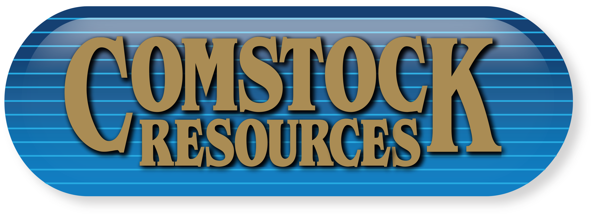
Comstock ResourcesProducerer naturgas i Louisiana og Texas.- Antero ResourcesProducerer naturgas i West Virginia.
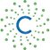
Centrus EnergyBeriger uran til brændsel i Ohio.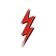
Kinder MorganDriver rørledninger til naturgas.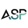
ASP IsotopesØger andelen af bestemte varianter af grundstofferne kulstof, silicium og ytterbium til medicin og chips. Udvikler gennem datterselskabet QLE uran, der er beriget mere end normalt, til nye reaktorer.- Vista EnergyProducerer olie og gas i Argentina.
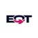
EQTProducerer naturgas i det østlige USA.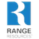
Range ResourcesProducerer naturgas i USA.
Canadian Natural ResourcesProducerer olie og gas i Canada.
Udstyr og arbejde ved brøndene
…af fonden
Før gassen kommer op, skal brøndene gøres klar, og anlæggene skal have pumper og ventiler. Selskaberne tjener penge på udstyret og på arbejdet ved brøndene.
Elproduktion: gas, turbiner og brændselsceller
…af fonden
Gasturbiner, motorer og brændselsceller laver strømmen, og nogle står direkte ved datacentrene. Selskaberne tjener penge på at sælge, leje ud eller bygge anlæggene og på service bagefter.
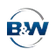
Babcock & WilcoxLaver kedler og udstyr til kraftværker.- Power Solutions InternationalLaver motorer og strømsystemer, blandt andet til datacentre.
- Ballard Power SystemsLaver brændselsceller, der omdanner brint til strøm.
- ERockLeverer lokal strøm fra gas til datacentre.
- Rolls-RoyceLaver flymotorer og kraftsystemer og udvikler små reaktorer.
- Bloom EnergyLaver brændselsceller, der producerer strøm ude hos kunden.
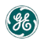
GE VernovaLaver gasturbiner og udstyr til elnettet. FluorIngeniør- og byggefirma. Afhændede sine sidste NuScale-aktier i april 2026.
FluorIngeniør- og byggefirma. Afhændede sine sidste NuScale-aktier i april 2026.- Plug PowerLaver brændselsceller og udstyr til brint.
- Solaris Energy InfrastructureLeverer strøm tæt på store forbrugere som datacentre.
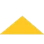
CaterpillarLaver maskiner og gasgeneratorer.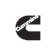
CumminsLaver motorer og generatorer.
Kernekraft og små reaktorer
…af fonden
Kernekraft giver strøm døgnet rundt. Flere af selskaberne udvikler små reaktorer, som endnu ikke er bygget. Andre tjener allerede penge på komponenter, brændsel og måleudstyr til atomkraftværker.
- BWX TechnologiesLaver reaktorer og dele til kernekraft.
- Nano Nuclear Energy ingen omsætningUdvikler meget små atomreaktorer.
- Oklo ingen omsætningUdvikler små kernekraftværker.
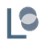
LightbridgeUdvikler brændselsstave til atomreaktorer.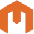
Mirion TechnologiesLaver udstyr, der måler stråling.- NuScale PowerUdvikler små modulære reaktorer.
- Terrestrial Energy ingen omsætningUdvikler en reaktor med smeltet salt.
- Terra Innovatum ingen omsætningUdvikler en mikroreaktor.
Sol
…af fonden
Solceller er hurtige at bygge og laver strøm om dagen. Selskaberne tjener penge på paneler, på elektronik, der gør solstrømmen klar til nettet, på stativer, der drejer panelerne efter solen, og på at sætte solceller op hos boligejere.
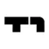
T1 EnergyLaver solcellemoduler i Texas.- SolarEdgeLaver omformere, der gør solstrøm klar til brug.
- First SolarLaver solcellemoduler af tyndfilm.
- Tigo EnergyLaver udstyr, der styrer og sikrer solanlæg.
- SunrunSætter solceller og batterier op hos boligejere.
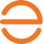
Enphase EnergyLaver små omformere til solanlæg.- NextrackerLaver stativer, der drejer solpaneler efter solen.
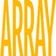
Array TechnologiesLaver drejelige stativer til store solparker.- Canadian SolarLaver solcellemoduler og batterilagre.
Batterier og reservestrøm
…af fonden
Batterier gemmer strøm, og generatorer tager over, når nettet svigter. Selskaberne tjener penge på batterier og reserveanlæg. Flere udvikler nye batterityper og har kun lidt eller ingen omsætning endnu.
- EnovixLaver lithium-ion-batterier med silicium.
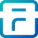
Fluence EnergyLeverer store batterier, der gemmer strøm på elnettet.- GeneracLaver generatorer til reservestrøm.
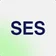
SES AIUdvikler lithium-metal-batterier.- QuantumScape ingen omsætningUdvikler faststofbatterier.
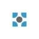
Solid PowerUdvikler materialer til faststofbatterier.- Amprius TechnologiesLaver batterier med silicium til droner og fly.
- Eos EnergyLaver zinkbatterier til elnettet.
- ElectrovayaLaver batterisystemer til industrien.
- MicrovastLaver battericeller og lagringssystemer.
- NeoVoltaLaver batterier til boliger.
Elnettet
…af fonden
Elnettet flytter strømmen fra kraftværket til den, der bruger den. Selskaberne tjener penge på at bygge ledninger og stationer, på kabler og elektriske systemer, på software, der styrer nettet, og på udstyr til elselskaberne.
- MYR GroupBygger elledninger og stationer i USA og Canada.
- Shoals TechnologiesLaver eludstyr, der samler strømmen i solparker og datacentre.
- Quanta ServicesBygger og vedligeholder elnet.
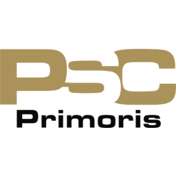
Primoris ServicesBygger elnet, rørledninger og anlæg, der fører frem til datacentre.- Tantalus SystemsLaver software og udstyr, der styrer elselskabernes net.
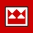
TerexLaver maskiner og arbejdskøretøjer, blandt andet til elselskaber.
Elselskaber
…af fonden
Elselskaberne ejer kraftværker og net og sælger strømmen til kunderne. Det er dem, et nyt datacenter skal aftale strøm med. De tjener penge på at sælge strøm, ofte til priser, der godkendes af myndighederne, og nogle laver lange aftaler direkte med datacentre.
- VistraProducerer strøm fra gas og kernekraft.
- Talen EnergyProducerer strøm, blandt andet fra kernekraft.
 NextEra EnergyElselskab med kernekraft, gas, sol og vind.
NextEra EnergyElselskab med kernekraft, gas, sol og vind.- DTE EnergyForsyningsselskab, der leverer strøm i Michigan.
 American Electric PowerForsyningsselskab, der leverer og transporterer strøm.
American Electric PowerForsyningsselskab, der leverer og transporterer strøm. CMS EnergyForsyningsselskab, der leverer strøm og gas i Michigan.
CMS EnergyForsyningsselskab, der leverer strøm og gas i Michigan.- FirstEnergyForsyningsselskab med eget højspændingsnet.
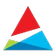
Southern CompanyElselskab i det sydøstlige USA med kernekraftværket Vogtle.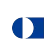
Clearway EnergyProducerer strøm fra sol og vind.
Linjen om hvert selskab bygger på selskabets egne årsrapporter og hjemmeside. Markeringen "ingen omsætning" bygger på selskabernes regnskaber for 2025 (QuantumScape: ingen omsætning fra hovedforretningen). Grupperne er NewDeal Invests egen opdeling. ProPetro, Atlas Energy Solutions, ITT, Flowserve og Terex er placeret efter deres årsrapporter for 2025. Hvor meget af selskabernes omsætning der kommer fra datacentre og AI, kan ikke opgøres. Andele i PMINDI pr. … (fondens data).
Forskellen
Hvad adskiller strøm fra elnettet fra strøm ved datacentret?
Datacentret skal tilsluttes nettet, og en ny højspændingsledning kan tage 4 til 8 år.
Hvor hurtigt det går
Gasturbiner, motorer og brændselsceller kan stilles op ved siden af datacentret uden at vente på en ny ledning. Også de kan dog have lang leveringstid.
Elselskaber som NextEra Energy og Southern Company.
Hvem der leverer
Selskaber som Bloom Energy, ERock og Solaris.
Svigter nettet, tager batterier og generatorer over.
Når noget går galt
Datacentret skal selv sørge for brændsel og vedligehold.
Det har vi skrevet
NewDeal Invests perspektiv
Ordret uddrag af NewDeal Invests egne ugebreve og indlæg om temaet, med dato og link til hele teksten. Det er ikke en anbefaling.
"Den første løsning er brugen af billig nordamerikansk naturgas kombineret med gasturbiner placeret direkte ved datacentrene."
Nævner: Boom Supersonic
Læs hele teksten på bloggen (åbner i nyt vindue)Risici
Risici ved energi og elnet
Ny teknologi skal godkendes
Flere af selskaberne udvikler små reaktorer, som myndighederne endnu ikke har godkendt, og godkendelsen kan tage længere tid end ventet. Oklo havde ingen omsætning i 2025.
Batterier under udvikling
Nye batterityper kan vise sig sværere at masseproducere end ventet. QuantumScape havde endnu ingen omsætning fra sin hovedforretning ved udgangen af 2025.
Politik og tilskud
Sol og batterier får i USA skattefradrag, og reglerne kan ændres. Fradraget til boligejere, der køber solceller, udløb ved udgangen af 2025.
Svingende priser på olie og gas
Selskaber, der henter gas op eller arbejder ved brøndene, kan få lavere indtjening, når olie- og gaspriserne falder, fx ProPetro.
Lange leveringstider
Kabler og store transformere kan tage flere år at få leveret, og projekter kan derfor blive forsinket og dyrere.
Kilder: årsrapporterne for 2025 fra Oklo (åbner i nyt vindue), QuantumScape (åbner i nyt vindue) og ProPetro (åbner i nyt vindue), Utility Dive om fradraget for solceller (åbner i nyt vindue) og IEA om leveringstider (åbner i nyt vindue). Listen er et udvalg og ikke en fuldstændig oversigt.
Kilder og kreditering
Tal og tekst
- Temaer og grupper: NewDeal Invests egen opdeling. ProPetro (åbner i nyt vindue), Atlas Energy Solutions (åbner i nyt vindue), ITT (åbner i nyt vindue), Flowserve (åbner i nyt vindue) og Terex (åbner i nyt vindue) er placeret efter selskabernes årsrapporter for 2025.
- Datacentrenes elforbrug i 2025 (485 TWh, 17 % mere end i 2024, datacentre bygget til AI 50 % mere): IEA, Key Questions on Energy and AI (åbner i nyt vindue) (16.4.2026).
- Danmarks endelige elforbrug i 2025, ca. 32,8 TWh uden nettab: Energistyrelsen, Energistatistik 2025 (åbner i nyt vindue). Verdens elforbrug i 2025, 31.779 TWh: Ember, Global Electricity Review 2026 (åbner i nyt vindue). Sammenligningerne (knap 15 gange og ca. 1,5 %) er NewDeal Invests egen beregning.
- Tid for at bygge et datacenter (2 til 3 år): IEA, Energy and AI: Energy demand from AI (åbner i nyt vindue). Ny højspændingsledning (4 til 8 år): IEA, Energy and AI: Executive summary (åbner i nyt vindue). Kabler (2 til 3 år) og store transformere (op til 4 år): IEA, Building the Future Transmission Grid (åbner i nyt vindue).
- Strømsvigtet 28.4.2025 kl. 12.33 og tiden, det tog at få nettet tilbage: ENTSO-E, 28 April 2025 Blackout (åbner i nyt vindue) (ekspertpanelets slutrapport, 20.3.2026).
- Risici: Oklo (åbner i nyt vindue), QuantumScape (åbner i nyt vindue), ProPetro (åbner i nyt vindue), Utility Dive (åbner i nyt vindue) og IEA (åbner i nyt vindue).
- Citatet: NewDeal Invest, "Fremtiden rykker tættere på", 15.12.2025 (åbner i nyt vindue).
Tegninger og logoer
- Tegningen af byen, figurerne og ikonerne er forenklede tegninger lavet af NewDeal Invest med hjælp fra AI.
- Logoer tilhører de enkelte selskaber.